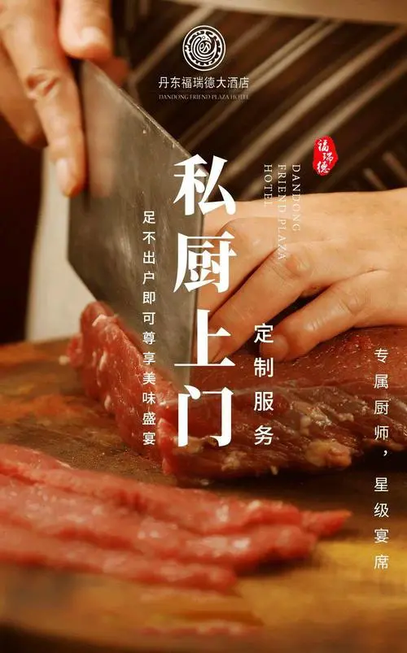

|  | 爱之厨私厨家宴是一个新兴的餐饮业态，其基本模式是由私人厨师在家里或者租用的场地，
通过预订或者线上平台接客，为顾客提供精致的定制菜单和餐饮服务，加强了与顾客之间的互动，
提供了更加私密化、个性化的用餐体验。
随着人们对于生活质量和用餐需求的提高， 私厨家宴市场正在快速发展。在中国传统餐饮文化日益受到重视的背景下，私厨家宴逐渐成为人们追求健康、 美味和美好生活的新选择，备受欢迎。同时，因为私厨家宴一场只接待少量的客人，所以菜品更注重细节和 个性，厨师与顾客之间的互动也能极大提升顾客的用户体验，进而口碑相传。 基于以上市场背景，我们建立 私厨家宴品牌团队，积极寻找有经验的私人厨师，开发个性化定制菜单，探索线上和线下营销和推广渠道， 同时优化内部运营流程和品牌管理，以期成为私厨家宴行业的领先者，带领整个行业的发展，为社会提供更 好的服务。私厨家宴项目背景私厨家宴是一个新兴的餐饮业态，其基本模式是由私人厨师在家里或者租用的 场地，通过预订或者线上平台接客，为顾客提供精致的定制菜单和餐饮服务，加强了与顾客之间的互动， 提供了更加私密化、个性化的用餐体验。 随着人们对于生活质量和用餐需求的提高，私厨家宴市场正在快速发展。在中国传统餐饮文化日益受到重视的背景下，私厨家宴逐渐成为人们追求健康、美味和美好生 活的新选择，备受欢迎。同时，因为私厨家宴一场只接待少量的客人，所以菜品更注重细节和个性，厨师与 顾客之间的互动也能极大提升顾客的用户体验，进而口碑相传。基于以上市场背景，我们建立私厨家宴品牌 团队，积极寻找有经验的私人厨师，开发个性化定制菜单，探索线上和线下营销和推广渠道，同时优化内部 运营流程和品牌管理，以期成为私厨家宴行业的领先者，带领整个行业的发展，为社会提供更好的服务。 私厨家宴的背景是人们追求更高品质、更健康、更创新的餐饮体验的需求上。 在传统餐厅中，客人往往只能 选择已有的菜品，而私厨家宴则能够为客人提供更加个性化的菜品选择和服务。此外，私厨家宴还能够让客人 与私人厨师进行面对面的交流，增加互动性，使整个用餐过程更加别致和独特。私厨家宴项目的成功需要具 备厨师技能和餐饮经验，同时还需要具备一定的市场开拓能力和客户服务水平。许多私厨家宴项目都在打造 特色菜品同时，也在提高营销能力与客户服务水平上做足功课,以吸引更多的客户，并拓展商机。 |